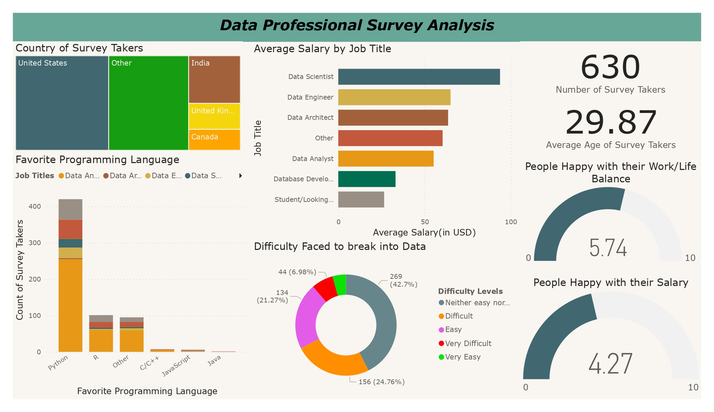

Data Professionals Survey Analysis using PowerBI
Introduction:
This report provides a comprehensive analysis of the data professionals' survey conducted using Power BI. The survey collected responses from 630 data professionals, offering insights into various aspects of their roles, skills, and experiences. The analysis aims to provide a detailed understanding of the current landscape of data professionals.
Dashboard:
{kind=link}
Demographics:
The survey included data professionals of various ages, with an average age of 29.87 years. The respondents represented different job titles and were located across several countries, including the United States, India, the United Kingdom, and Canada. The survey sample included professionals from a range of backgrounds and experiences.
Job Titles and Salary:
The survey collected information on job titles and average salaries of data professionals. The analysis revealed the following job titles and average salaries (in USD):
- Data Scientist: $93,780
- Data Engineer: $65,090
- Data Architect: $63,670
- Data Analyst: $55,300
- Database Developer: $33,200
- Other: $60,490
Favorite Programming Language:
The survey asked participants about their favorite programming languages. The analysis showed that the most popular programming languages among data professionals were Python and R. Python was the preferred language for a majority of the respondents, followed by R, C/C++, JavaScript, and Java.
Job Satisfaction and Work-Life Balance:
The survey assessed job satisfaction and work-life balance among data professionals. The analysis showed that data professionals, on average, rated their satisfaction with salary at 4.27 on a scale of 0 to 10. Regarding work-life balance, the average rating was 5.74 on the same scale. These results indicate that data professionals generally have moderate satisfaction with their salary and work-life balance.
Difficulty Levels Faced in Breaking into Data:
The survey aimed to understand the challenges faced by data professionals in breaking into the field. The analysis revealed that the majority of respondents (42.7%) found it neither easy nor difficult to break into the field of data. 24.76% found it difficult, 21.27% found it easy, 6.98% found it very difficult and 4.29% found it very easy. This suggests that while entering the data field may not be extremely challenging, it still presents some difficulties for aspiring professionals.
Conclusion:
The analysis of the data professionals' survey provides valuable insights into the demographics, job titles, salary, programming language preferences, geographical distribution, job satisfaction, work-life balance, and difficulties faced by data professionals. These findings can assist organizations and individuals in understanding the current trends and challenges in the data industry.
Recommendations:
Based on the survey analysis, the following recommendations are proposed:
- Organizations should consider the popularity of programming languages such as Python, R, and SQL when developing data-related projects and initiatives.
- Employers should assess salary structures to ensure competitive compensation for data professionals.
- Efforts should be made to enhance work-life balance for data professionals to improve overall job satisfaction.
- Aspiring data professionals should focus on acquiring skills in popular programming languages and seek opportunities to gain practical experience in data-related projects.
Limitations:
It is important to note that the survey analysis is based on self-reported data and may be subject to response bias. Additionally, the survey sample may not fully represent the entire population of data professionals. However, the findings provide valuable insights into the current trends and perceptions among data professionals.
Disclaimer:
The data presented in this report is based on the survey responses collected up to a specific date and is subject to change as the industry evolves.
You can get the data and project files from my GitHub